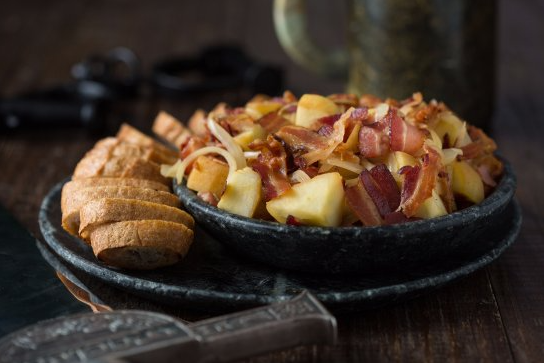

Apple Bacon

Description
A delicious and easy-to-make side dish that is perfect for any occasion.
The apples are cooked in a sweet and savory sauce that is made with bacon,
onions, and honey. The apples are cooked until they are soft and tender,
and the sauce is reduced until it is thick and glossy.
Ingredients
- 1 pound bacon, chopped
- 1 onion, chopped
- 2 apples, peeled, cored, and sliced
- 1/4 cup honey
- 1/4 cup apple cider vinegar
- 1/4 teaspoon ground cinnamon
- 1/4 teaspoon ground ginger
- 1/4 teaspoon salt
- 1/4 teaspoon black pepper
Steps
- In a large skillet, cook the bacon over medium heat until crisp.
-
Remove the bacon from the skillet, reserving 2 tablespoons of the
drippings in the skillet.
-
Add the onion to the skillet and cook until softened, about 5 minutes.
-
Add the apples, honey, apple cider vinegar, cinnamon, ginger, salt, and
pepper to the skillet.
-
Bring to a boil, then reduce heat to low and simmer for 15-20 minutes,
or until the apples are tender.
- Stir in the reserved bacon and serve.